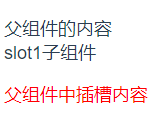
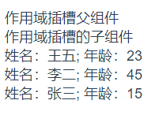

一.插槽是个什么玩意，能吃吗
二.插槽怎么用，好用吗
1.默认插槽
父组件
1 <template>
2 <div>
3 父组件的内容
4 <slot1>
5 <p style="color:red">父组件中插槽内容</p>
6 </slot1>
7 </div>
8 </template>
子组件
<template>
<div>
<div>slot1子组件</div>
<slot></slot>
</div>
</template>
<script>效果

从上面可以看出，父组件引用子组件标签里的内容被加在了子组件<slot>标签中。slot就是一个插槽，当父组件调用子组件时，父组件的内容被插入到子组件相应的位置中了。
2.具名插槽
顾名思义，就是有具体名字的插槽，子组件中与父组件相对应名字的内容将添加。
3.作用域插槽
父组件
<template>
<div>
作用域插槽父组件
<slot2>
<template slot-scope="user">
<div v-for="(item, index) in user.data" :key="index">
<span>姓名：{{item.name}}</span>;
<span>年龄：{{item.age}}</span>
</div>
</template>
</slot2>
</div>
</template>
<script>
import slot2 from "./slot2"
export default {
name: 'main',
components: {
slot2
}
}
</script>
<style scoped>
</style>子组件
<template>
<div>
作用域插槽的子组件
<slot :data="user"></slot>
</div>
</template>
<script>
export default {
name: 'slot2',
data () {
return {
user: [
{name: '王五', age: '23'},
{name: '李二', age: '45'},
{name: '张三', age: '15'}
]
}
}
}
</script>效果

父组件使用slot-scope接收来自子组件传过来的参数。
使用场景：如果子组件中的某一部分的数据，每个父组件都会有自己的一套对该数据的不同的呈现方式，这时就需要用到作用域插槽